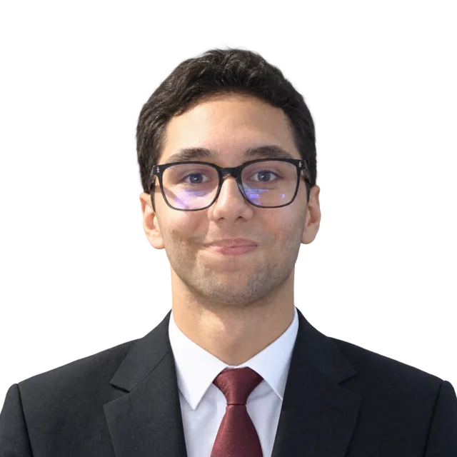

PROFILE · 03
About
the researcher.
Student and independent researcher, Istanbul, Türkiye.

BIOGRAPHY
Kaan Karataş is a 16-year-old student and independent researcher from Istanbul, Türkiye, in his second year of high school.
Since 2024 he has built the World Trade Center Archive, a 100-page open-access documentary history of the World Trade Center based on official records. It includes testimonies contributed by 9/11 survivors Michael Hingson and Janice Brooks and historian Robert W. Snyder. The archive is published on Zenodo and is being added to the oral history collections at Columbia University.
He has also written a research paper on the Turkish Parliament's debate of 10 October 2001 on military authorization after 9/11, and a conceptual essay on atmospheric media and psychological distance.
He works without institutional affiliation or funding and is open about his use of AI tools, which he never allows to change the words of the people he documents. His interests include history, political science, psychology, oral history, and finance.
AT A GLANCE